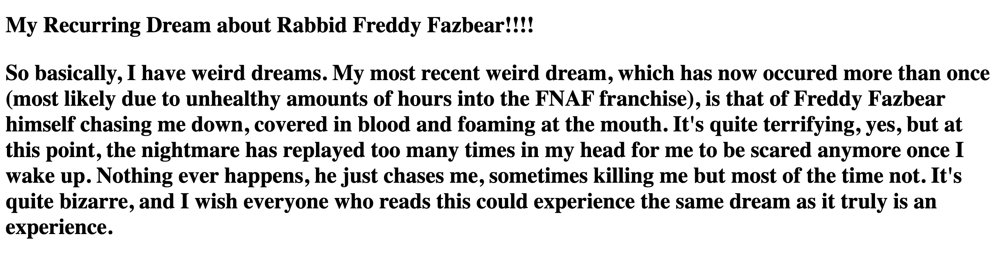
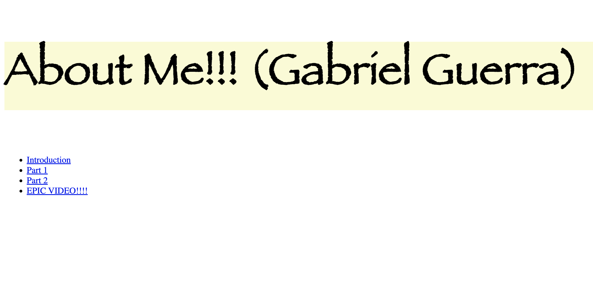
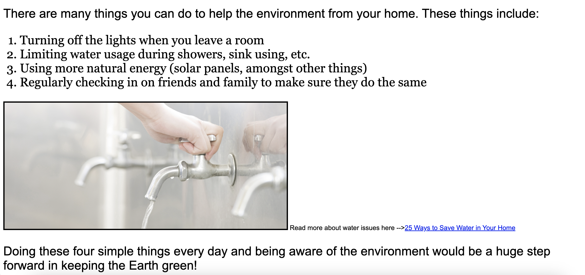
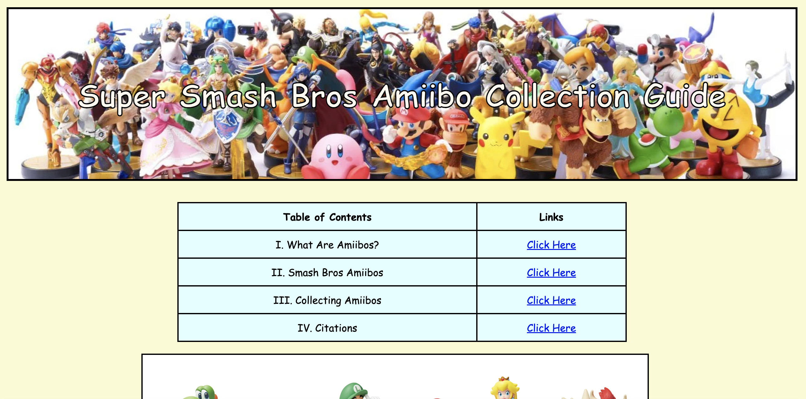
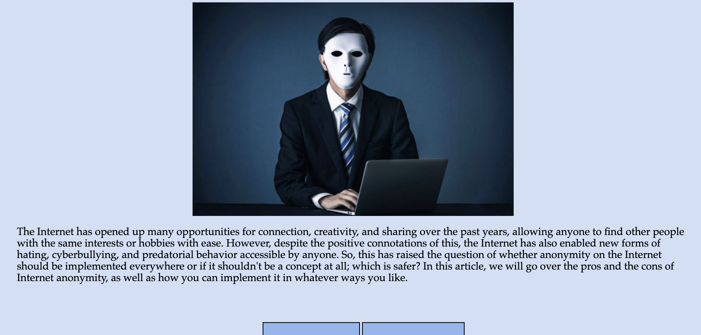
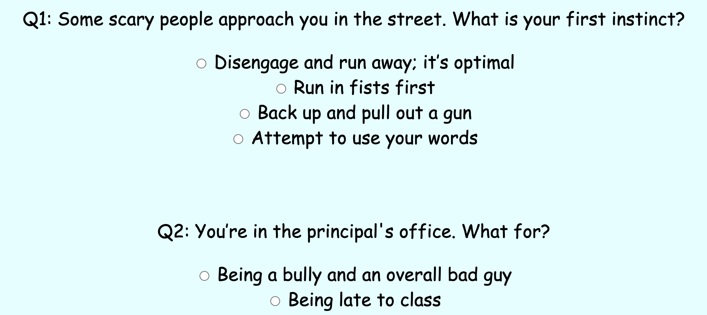
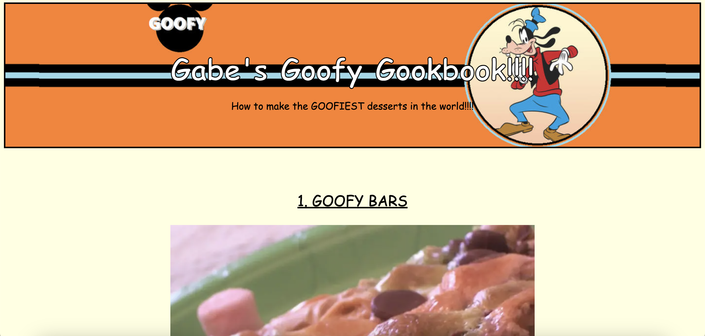

| Table of Contents | Links |
|---|---|
| I. Recurring Dream | Click Here |
| II. About Me | Click Here |
| III. Environmental Call to Action! | Click Here |
| IV. Collector's Guide | Click Here |
| V. Social and Ethical Issues With IT | Click Here |
| VI. Buzzfeed Quiz | Click Here |
| VII. Cookbook | Click Here |
Humble Beginnings: Recurring Dream
This was the first project we ever made for computer science. It was our introduction to HTML and how to write basic code. This was to put primary emphasis on how to make an HTML document, upload it to a collective file, and how to title and name a website. This was also the first use of an element within any of our work, and was to show that we knew how to use it.
Understanding the Basics: About Me
This was our second project assignment, and was a huge step up from Recurring Dream. In this, the primary focus was the use of style within elements to give personality to a page that explained a little bit about ourselves. I used it to change fonts, sizes of text, background color of text, and spacing at wild intervals throughout the HTML website just so I could prove I could. Furthermore, this is where we learned to import photos using the img tag and how to embed outside links AND links that went to other parts within the page, in this case a YouTube video and a table of contents respectively.. The final thing we incorporated was a Top 10 list, where I used my learnings of the ul and ol elements to show my top 10 favorite songs. Very fun project, and a great introduction to the basics of HTML.
Moving Forward With CSS: Environmental Call to Action!
The main point of this project was to not only highlight an environmental issue we were passionate about, but also to demonstrate and practice our knowledge of CSS. I linked a CSS file to this HTML page for the first time, and in the CSS is where I incorporated all of the styles of different parent elements and div elements. In the project itself, I advocated for energy conservation from within your home, talking about ways we can limit waste of energy from our very own houses. Along with the CSS file, I used a table of contents with links that went to various parts of the page and embedded a video link and used an image.
The Fun Begins: Collector's Guide (With Augi!)
This was probably the most fun I’ve had on an HTML file. Partnered with Augi, we decided to make a collector’s guide on Smash Bros amiibos, going over the rarity of them, prices, and the best ones to purchase. The technical point of this project was the use of links and a table, which we had just learned how to make, with Augi and I incorporating a table through use of a table of contents. We also used spacing tools, adjusting where images or words were on the page using width and height and space elements. This page has a ton of personality, and even uses new CSS features like background images and colors and text-stroke styles and different fonts. We also implemented our use of a colorful, creative title card that took up its own space within the page at the top. Overall a very fun project that taught us a lot about CSS and HTML coding.
The Fun Begins CONT'D: Social and Ethical Issues of IT
For this project, we all chose a social/ethical issue of IT to write about. I chose anonymity, simply because I wanted to. In terms of coding, the primary focus of this page was to display a dropdown table, which I used through pros and cons of anonymity on the internet. Along with that, I attached a CSS file to decorate the page and make it aesthetically pleasing. But overall, the main focus was on that dropdown menu, which took quite a while to master.
Javascript Foundations: Buzzfeed Quiz
This project was the first one in which we incorporated Javascript into our HTML file. This was a huge step in my coding journey, as it was the first time where I implemented Javascript and its functionality. We had to create a quiz, and I chose to make a quiz that told you which Smash Bros character you should play based on your answers from some personality questions. I used radio inputs to create a multiple choice based quiz, with each input adding a value to a variable, and once the “submit” button was pressed it called upon a function that totalled the values of the variables and would give the result based on whichever variable had the highest value, with each variable corresponding to a Smash Bros character. It was super fun, and despite taking a long time, was very helpful in being the guiding steps into the wide world of Javascript.
More Javascript: Cookbook
This was the final project that we did this semester. I made a cookbook on the silliest recipes you could make, and using objects in Javascript, you could vote on which recipe was your favorite and the site would tell you the percentages of how much that recipe is loved around the world. Along with this, I used Javascript to make it so that you can type in your own recipe and have it displayed on the page using innerHTML. This was a great project to end the year on, as it simultaneously tied up our basics of HTML and Javascript learning while also introducing us to the whole world that is still ahead.